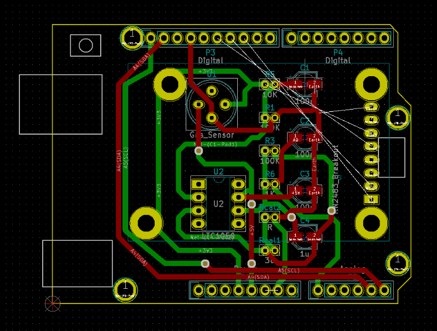

Portifolio
Technical
Here I'll get into details on the tecnical aspects of each project, that is: the problems and the solutions found. I'll also provide the reports (to a more complete technical description) and the respective links to Github repositories.
In this section I included an analytical perspective of what I've learned and my role on each of the studied topics. As well as a self-evaluation based on the criteria showed in the Generalities tab.
.png)

.png)
UF: Smart Devices
Microcontrollers and Open-Source Hardware (MOSH)
To achieve the goal of implementing a communicating gas sensor, first I had to get familiarized with the KiCad EDA software. This open-source software was used in order to make the schematics and the PCB design of the Arduino shield containing the gas detector.
The first part consisted on the conception of the electronic circuit schematic representing our system. The circuit is composed of the gas sensor, an impedance adaptation phase (containing the operational amplifier LT1050) to adapt the gas sensor values to the ADC entry of the Arduino Uno board, and the Lora module RN2483.
Some of these compoenents weren't present in the given libraries of Kicad so we had to create them based on their datasheet information.
This final schematic is shown in the figure below:
After that, we could associate the components of the circuit to footprints of real components (capacitor, resistors, etc) to then generate the PCB. With the generated PCB components, we had to position properly the elements on the shield to make the connections and make the routings. Regarding the routings, we decided to use the upper and the lower layer for a more clear design as shown in the following figure.

With that done we could also obtain a 3D visualization of our shield:
In addition to that, on the Arduino UNO part: we first had to put into practice our soldering skills to integrate the LoRa module LNR483 to a PCB that could then be connected to the Arduino. With the LoRa module and the gas sensor connected, we could collect the data from the sensor visualizing it on a dashboard in The Things Network platform. The code for the Arduino and the Kicad files are all available on the Github repository below.
Also, to get into more details about other technical aspects of this project you can check the Readme file as well as the Arduino code and the project's PCB and schemas on Github.
Knowledges and skills mobilised
| Microcontrollers and Open-Source Hardware (MOSH) | |||
|---|---|---|---|
| Skills | Required level | Self Evaluation | Commentary |
| Understand microcontroller archictecture and how to use them | 4 | 3 | I had already seen many of these notions in previous courses in my 4th year. I believe I have a really good understanding on microncontroller's architecture in general. |
| Be able to design data acquisition system (sensor, conditioner, microcontroller) with respect to the application | 4 | 3 | This was also a concept that I had already practiced in previous years. I beliele this course helped me strenghten this competence even more. |
| Be able to design the electronic circuit of a sensor’s signal conditioner (design + simulation) | 4 | 4 | Since I have an electronics background, I was already familiar with the concept of electronic circuit and some basic circuit notions (filtering, aliasing, adaptation of impedance, etc) design and the software LTSpice. I'm glad I could exercise this even more in this course. |
| Be able to design a shield to accommodate the gas sensor | 4 | 3 | I'm glad I could expand my knowledge on PCB design, which I consider a really important topic in the formation of an electrical engineer and this was only the second time I did it. But still I thing there are so many things to learn on this topic. |
| Be abe to design the sofware to use the gas sensor and its HMI | 3 | 2 | As I've already worked with Arduino, I felt really confident on this topic. But unfortunately, as we split the works, I didn't work much on the Lora module and the communication to the TTN. |
| Be able to combine all of the above mentioned components into a smart device | 4 | 3 | In the end, my group was successful to integrate all of these knowledges. We just didn't print our PCB to actually test it. But still, I believe this course involved the interrelation between many knowledges and I really enjoyed it. |
In this course, I was able to expand my knowledge on PCB design, which I consider a really important topic in the formation of an electrical engineer. It was one of my favorite courses from this semester because we were able to do a complete project from bottle to top: since actually fabricating the sensor, making the conception of a schematic circuit, the PCB, integrating the sensor into a connected IoT context.
As my group for this project was really well divided into specialities, the parts of the project could be really well divided. That was good because no one got overloaded in work and each one concentrated on its part but that also meant that I didn’t get involved to deep into the part of the LoRa module. This part I had to catch on later.
Sensors Introduction
As I’m a student in a professionalisation contract, unfortunately I could not participate in the manufacturing of the gas sensor. I could only work on the elaboration of the datasheet. With the measures collected we could organize the data to plot graphs as shown in the datasheet below.
Knowledges and skills mobilised
| Sensors Introduction | ||
|---|---|---|
| Skills | Required level | Self Evaluation |
| Understand basic notions of sensors, data acquisition: physics, electronics and metrology point of view | 4 | 3 |
| Be able to manufacture a nano-particles sensor using micro-electronics tools: chemical synthesis, assembly, testing | 4 | 1 |
| Be able to design the datasheet of the sensor manufactured | 4 | 2 |
This course is completely from the normal courses I had in my formation, this is what is interesting about the ISS teaching program so I wish I could have participated in the practical works to manufacture the nanosensor. However, I thought it was really interesting the exercise of elaborating a datasheet. Datasheet is a documentation that I’m used to consulting all the time in my specialization and with the exercise of building one I think I can understand better how to look for information in a datasheet and how crucial it is to construct a really accurate documentation.
UF: Communication
In a Internet of Things context, one of the most important aspects is how the objects communicate with each other. In this UF we learned how the wireless communication is implemented between different devices. We studied different types of protocols for connected objects allow objects to communicate between each other sending and transmiting data.
We also learned about connected objects from a security aspect: confidentiality, integrity, and availability of data.
Protocols for connected objects
Protocols for connected objects
In this course, groups made presentations about different communication protocols: Sigfox, LoRa, Zigbee, Bluetooth Low Energy and NB-Iot. From these presentations we could learn about multiple protocols as well as make a comparison between them.
For this course, I teamed up with Diep Vu on a presentation of the Narrowband-IoT protocol focusing on the aspects about the: physical layer, MAC layer, power consumption, security, routing and mobility.
We elaborated a detailed report to explain our research on these points as well as a power point presentation, both of them are available below for consultation.
5G and 5G in developing countries presentation
In this course we could have a really wide and complete overview on this new 5G technology from the presentations made by groups on this new 5G emergent technology: how it works, which countries are implementing already the 5G and its social and political implications.
I made a group with Diep Vu and Yimin Fu, and we decided to talk about how 5G can improve conditions in developing countries. We found this to be a really inresting topic, if you're interested please feel free to take a look into our presentation below.
Study on MAC layers for wireless sensor networks
This research was made individually and the focus in the MAC layer of Wireless sensor networks (WSNs). Since different applications have different requirements, WSNs will employ a family of communication standards. MAC layer is a major reason to provide the reliability and efficiency for WSN. In WSN we need a MAC protocol to consider energy efficiency, reliability, low access delay and high throughput as major priorities.
The report and presentation on this topic can be accessed below.
Radio communication
This course consisted on practical works where we studied the modulation and demodulation of real AM and FM radio signals through a Software Defined Radio (SDR) approach. SDR is a technology of electromagnetic signal modulation and demodulation that allows us to perform signal processing tasks that are typically done by hardware, using software.
During the TPs, we worked with a National Instruments National Instruments USRP-2900 software defined radio transceiver and a software called GNU Radio, which works with functional blocks that provide various signal processing functions. This way we can implement different signal processing functions in a really simple and easy way.
During the classes, firstly we demonstrated that, in the case of narrowband signals, the IQ transceivers (Inphase/Quadrature) allow transmissions with frequency transportation without altering data. After that, we worked on a real time demodulation of an FM broadcasting signal and a VOLMET AM signal.
The practical works were made individually but for the final report (shown below) me and Diep Vu worked together.
Knowledges and skills mobilised
| Protocols and communication | ||
|---|---|---|
| Skills | Required level | Self Evaluation |
| Understand the major development phases for mobile communications and development of the associated technology | 4 | 3 |
| Understand the impact of new mobile technology | 4 | 4 |
| Be able to analyse and evaluate optimal wireless network technologies | 4 | 4 |
| Be able to suggest optimal technological solutions for IoT networks | 4 | 2 |
| Understand and master optimisation of communication protocols for IoT with respect to energy limitations | 3 | 3 |
| Understand and master optimisation of communication protocols with respect to security concerns | 4 | 2 |
| Know the main processing techniques used for digital communication and know how to explain the basic structure of digital RF transmitter-receiver | 4 | 4 |
| Mastering the architecture of an energy management system, simple storage, energy recovery, know how to size the storage element according to the specifications | 4 | 4 |
Thanks to the Wireless Digital Communication lectures, I learned about the existing wireless technologies, and what were their strengths and weaknesses and what are the main characteristics that define them. I really liked the format of the course which was really dynamic and it seemed more like an active discussion than a passive-learning tradition lecture. Now I believe I'm able to understand the fundamentals of each protocol. Also in this course, we learned more about how to be more critical during research, taking always into consideration sources and being critical about the data being provided. This was a really interesting aspect of the course for me because we could see some contraditions in articles and exercise more critical thinking.
During the 5G opening presentations, I feel like I learned a lot about 5G. But what I enjoyed the most was how with some of the presentations, we saw the impact that emerging networks were going to have on the society of tomorrow. And thinking about the consequences of developing new technologies is essential for the formation of an engineer. As engineers ous actions can have lots of social and political impacts.
About security for connected objects, I believe I understood the principles of security during the lectures. But I wish we'd had the opportunity to apply some of these theorical lessons in lab sessions to have a concrete experience in the IoT security field.
Concerning the energing networks classes, I thought it was a really interesting concept to approach during the teaching program. Whatsoever the lectures could be really hard to follow for people with not a good network background.
UF: Middleware and Services
Service Oriented Architecture
For this project I teamed up with Noël Taillardart and Poonkuzhali Pajanissamy on the creation of a smart building application capable of managing INSA’s rooms: turning on/off lights, computers, heaters and opening/closing windows automatically or manually by the user. Our application is also capable of receiving a schedule to implement all these actions cited before.
Our first step was defining the architecture of our system. In the figure below we show a diagram containing the actual deployment of the architecture of our system:
So in our defined architecture, our Infrastructure Node (IN) ins INSA’s campus, our Middle Nodes (MNs) are floors at GEI’s building and our Application Entities (AEs) are the rooms in each floor, that’s where our actuators and sensors are located. To make an abstraction of this architecture and test our system we used Node-RED to create all these elements on the OM2M platform (see figure below).
To interact with the lights, computers, shutters and windows of the rooms we created aUser Interface as shown in the figure below. So when actions are received via the User Interface, the microservices (coded in Java using the Eclipse Neon 3 IDE) send http requests to handle the actions.
My role: In this project, apart from the conception and management part, I worked on coding the microservices to implement the actions of the actuators using Java programming language and the Eclipse Neon 3 IDE.
Also, in this project we could apply project management methods, in particularly: the Agile method. I you're curious to see more details about this project, please feel free to ckek out our report below:
Knowledges and skills mobilised
| Software Oriented Architecture | ||
|---|---|---|
| Skills | Required level | Self Evaluation |
| Know how to define a Service Oriented Architecture | 4 | 4 |
| Deploy an SOA with web services | 4 | 4 |
| Deploy and configure an SOA using SOAP | 4 | 4 |
| Deploy and configure an SOA using REST | 4 | 4 |
| Integrate a process manager in an SOA | 3 | 3 |
This project was one of my favorites of this semester, I found the use case to be really interesting. And it really helped me understand how a middleware architecture works during the conception of the architecture phase. It was a good way to put together all the knowledge that we learned in the Middleware and Services training. Thus, I feel really confident on the skills mobilised in deploying web services.
Middleware for the Internet of Things
During the practical works, we took some time in the first sessions to understand how the OM2M architecture (the nodes, applications) are deployed in the platform. We could see how a GUI simulating switching on and off lamps (see figure below) caused changes in real time on the correspondent OM2M architecture.
We were able to deploy simple IoT architectures and interact with OM2M resources via http protocols. To send the http requests we used a Postman software that allowed us to send GET, POST, PUT and DEL in a simple way.
Also, we learned how to use the Node-RED tool to generate the nodes and application in the OM2M platform (see figure below).
In the last practical work, we introduced Philips Hue Lamps (Zigbee technology) into our existing IoT architecture and we used an IPE (Interworking Proxy Entity) to translate the device technology to the oneM2M standard in a way that the systems could communicate. So we could turn on/off the Philips lamp and change its color.
To have more details about the technical aspects explored during the practical works, you can take a look in the report below.
Knowledges and skills mobilised
| Middleware for IoT | ||
|---|---|---|
| Skills | Required level | Self Evaluation |
| Know how to situate the main standards for the Internet of Things | 4 | 3 |
| Deploy an architecture compliant to an IoT standard and implement a sensor network | 4 | 3 |
| Deploy and configure and IoT architecture using OM2M | 4 | 4 |
| Interact with the different resources of the architecture using REST services | 4 | 4 |
| Integrate a new technology into the deployed architecture | 3 | 2 |
This module was really important to understand many base concepts of IoT, the machine to machine communication and interoperability and the REST services. Many of the technical aspects explored in this module were used for other works in this UF. It was really important to do these activities before doing the INSA's rooms management, for example.
Another thing I enjoyed was the OM2M MOOC classes. I thought it was more efficient learning these concepts at my own pace and doing mini exercises at my own rythm than attending lectures. I felt really prepared to the TPs by doing the MOOC lessons.
Adaptability: Cloud and Autonomic Computing
During the practical works, we learned how to create Virtual Machines and Dockers using the OpenStack, which is an open source platform that uses virtual resources (in a very intuitive and clear way) to build and manage private and public clouds. In the following part, we learned more about the concept of "cloud" by provisioning end-user applications in different cloud applications: Google Cloud, Cloud Foundry and Jelastic.
Knowledges and skills mobilised
| Adaptability: Cloud and Autonomic Computing | ||
|---|---|---|
| Skills | Required level | Self Evaluation |
| Understand the concept of cloud computing | 3 | 3 |
| Use a IaaS-type cloud service | 3 | 2 |
| Deploy and adapt a cloud-based platform for IoT | 3 | 1 |
I found this course to be very useful and interesting because my Innovation Project, I had to deploy a Virtual Machine and Docker environments. These were new concepts to me and it would have helped me to have learned about them earlier. But at the same time the Innovation project I worked on this semester is a real proof of how relevant and useful the concepts seen in this module are.
I really enjoyed the way the TPs were made. Whatsover, the second part of the practical works went really fast and it was really interesting, I wish we spent more time on it to develop more my skills in this domain that is so relevant.
Analysis and data processing
Software Engineering
During our main project of the semester, the Autonomous Vision project made in partnership with the company Wiifor, we adopted the Agile method: creating sprints and defining stories using the organization platform Redmine, which is a tool used by Wiifor.
The idea of this method is to allow a more flexible development, establishing the next objectives and tasks based on the current advancement of the project. At the end of each cycle (“sprint”) we should be able to have a small functioning part of what is the whole system that we aim to achieve in the end.
The idea also is to keep track of how the work was divided between the group and how much time was spent on each task. For the INSA’s rooms management project we used another tool to define our sprints, the IceScrum. One interesting feature of this project was the possibility of attributing certain “effort” values. In the figure below you can our backlog stories for the first INSA’s rooms management sprint.
Knowledges and skills mobilised
| Software Engineering | ||
|---|---|---|
| Skills | Required level | Self Evaluation |
| Define the different phases in software development | 3 | 3 |
| Know the different project management methods | 3 | 3 |
| Apply one of these methods a project | 3 | 3 |
I really enjoyed having this course and mostly being able to apply these methods in practice. I believe that this is a really important part of our formation: learning to apply our technical skills and time in the most efficient way possible to generate productivity. Specially having this course right before our company internships was really helpful.
Semantic Data
In our first TP we used the Protégé Software, which is an open-source ontology editor and framework for building intelligent systems. The aim was to build an intelligent meteorological application by creating and manipulating an ontology and showing the predictions that the reasoner could make based on the developed ontology.
In the second TP, we used the ontology about meteorological phenomenons created on the previous TP to evaluate a real dataset with data from a real city. To do that we worked with a Java library called Jena, distributed by Apache, that is used for web semantics manipulations.
The practical works were done individually but the final report of the two TPs were written with Lucie Bechtet and Vincent Erb. To see in the details the work done in these two practical work sessions, feel free to check the report below.
Knowledges and skills mobilised
| Processing Semantic Data | ||
|---|---|---|
| Skills | Required level | Self Evaluation |
| Design and understand a model for an application | 3 | 3 |
| Know how to infer new knowlegde from a knowledge base | 3 | 3 |
| Be able to enrich data with semantic meta-data | 3 | 3 |
Particularly, I found this to be one of the most interesting topics we studied this semester. The data is organized in such a way that it can be interpreted meaningfully without human intervention, in a way that: the data (symbols) can be seen as words and by establishing relationships between these words we can create meaning artificially. And the ontology can predict other relationships between those data, kind of like an artificial intelligence.
Big data
For the evaluation of the skills acquired during this module, we had to produce an analysis on an open-source dataset of our choice using R as programming language. For this work I teamed up with Diep Vu and we chose to work on a dataset of one of the most popular tv shows of all time and that we both liked, Game of Thrones.
From the dataset of the Game of Thrones episodes we could train our skills acquired during the TP lessons in a fun way at the same time extracting some curious data.
If you’re interested to see a more in depth analysis of the Game of Thrones TV show, please feel free to take a look in our final report below.
Knowledges and skills mobilised
| Big Data | ||
|---|---|---|
| Skills | Required level | Self Evaluation |
| Know how to explore and represent data sets | 3 | 3 |
| Master R | 3 | 2 |
| Master complexity associated to statistical data processing and know the techniques to be used to minimise them | 3 | 1 |
I found this part of the ISS teaching program particularly interesting, we could reflect not only on technical aspects of data treatment but also on how data can easily be manipulated to represent a point of view and how every data carries a subjectiveness.
I think I could reach a basic level in R language. I just wish we could have had more well organised schedule for this classes. It became clear to me during this course that this is certainly a topic I wish to master more.
UF: Innovative Project
Eyemb: an Autonomous Vision solution
In the picture below we make an overview of our project:
Materials
For the development of our project, we used the following hardware components:
On the software parte we worked with a Virtual Machine environment with Ubuntu 16.04. And to develop our CNN solution, we used the following libraries and programming languages: Python, TensorFlow and OpenCV.
Our project could be divided into two interconnected parts: work on GAPuino and work on Computer.
Work on GAPuino
This part consisted on:
This part of the project presented many challenges due to the fact that the GAP8 microcontroller, developed by Greenwaves Technologies (French company founded in 2014), is a very recent technology still undergoing changes in their basic configuration Software Development Kit.
Work on Computer
This part consisted on:
Final prototype
More than just a prototype, at the end of our project we were able to deliver:
In the figure below we show the prototype we used on our demonstration.
My role in this project
I worked on a first Neural Network approach to test if LCD digits could be recognized by using a handwritten number dataset (MNIST), on building th CNN bibliography, on the construction of the dataset and on the whole hardware part with the GAPuino board (setting up the SDK environment to work on the board, seeing how to run/compile programs on the board, how to use the NNtool, etc).
To get very detailed information about our work on this project, I welcome you to check out the report below.
Creativity/TRIZ methods
In this module me, Lucie Bechtet and Poonkuzhali Pajanissamy have chosen an object (reading glasses) to make a whole complete study around it: unraveling its essence (basic functions), its history and evolution until applying the creativity methods (S-Curve, 9-Windows, Spider, etc) seen during the lectures to think of ways of innovating it.
It was a really fun and interesting, and you can check out the result of this work below:
Knowledges and skills mobilised
| Manage an innovative project | ||
|---|---|---|
| Skills | Required level | Self Evaluation |
| Solve a problem in a creative way | 4 | 4 |
| Develop the first stage of innovation | 4 | 4 |
| Understand production, validation, distribution, acceptability, and aftermath of innovation | 4 | 4 |
| Structure and lead an innovative project | 4 | 2 |
| Learn teamwork | ||
|---|---|---|
| Skills | Required level | Self Evaluation |
| Multi-disciplinary students work as a team | 4 | 4 |
| Be convincing: present and defend idea | ||
|---|---|---|
| Skills | Required level | Self Evaluation |
| Express and exchange hypotheses | 4 | 2 |
| Suggest a strategy to solve the problem identified | 4 | 1 |
| Suggest a model | 4 | 1 |
| Choose,design and/or justify a protocol or an experimental prototype | 4 | 2 |
| Self evaluation with portifolio | ||
|---|---|---|
| Skills | Required level | Self Evaluation |
| Reflect upon my training process and methods | 4 | 4 |
| Be able to put forward my training experiences, whether they be explicit or implicit | 4 | 1 |
| Be self-sufficient and responsible towards my education | 4 | 4 |